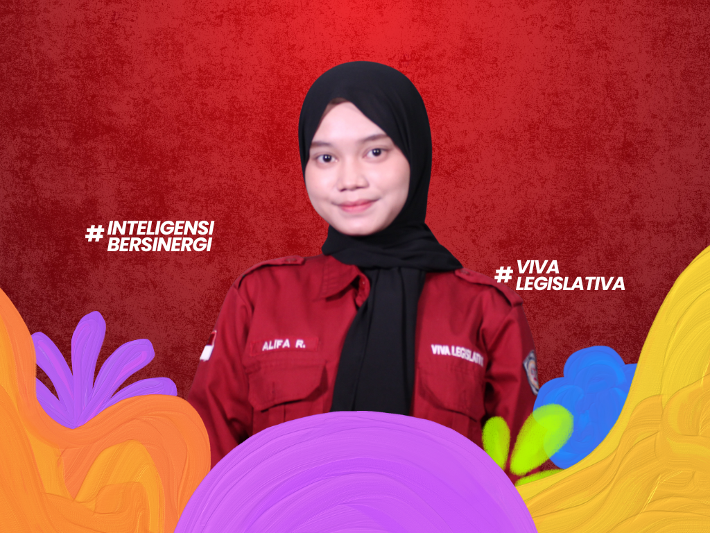
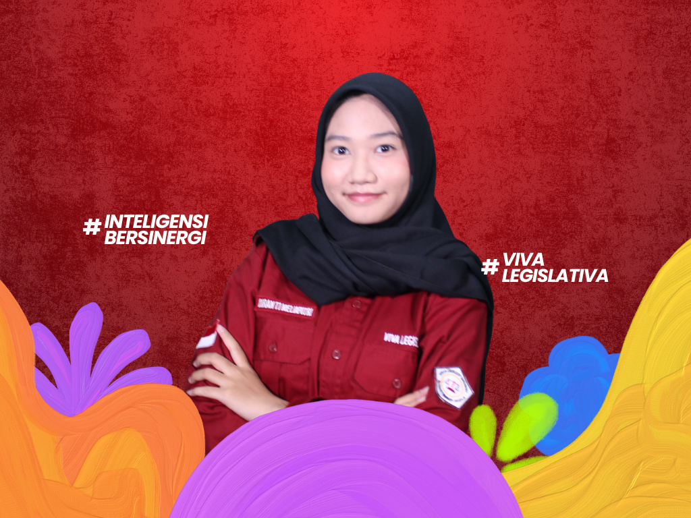
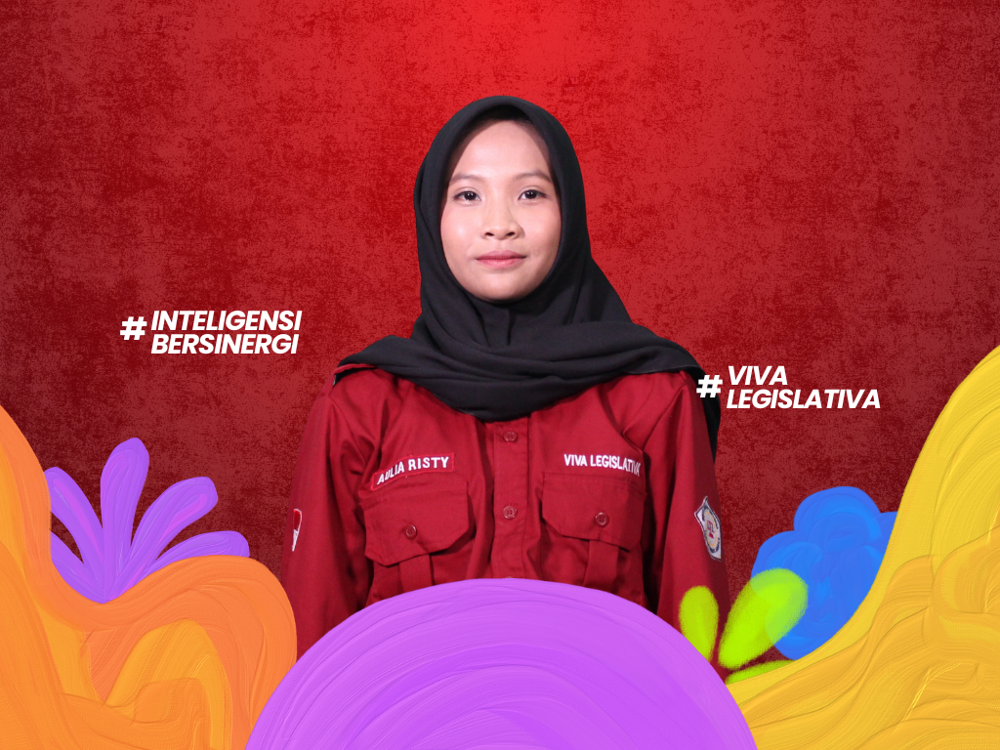
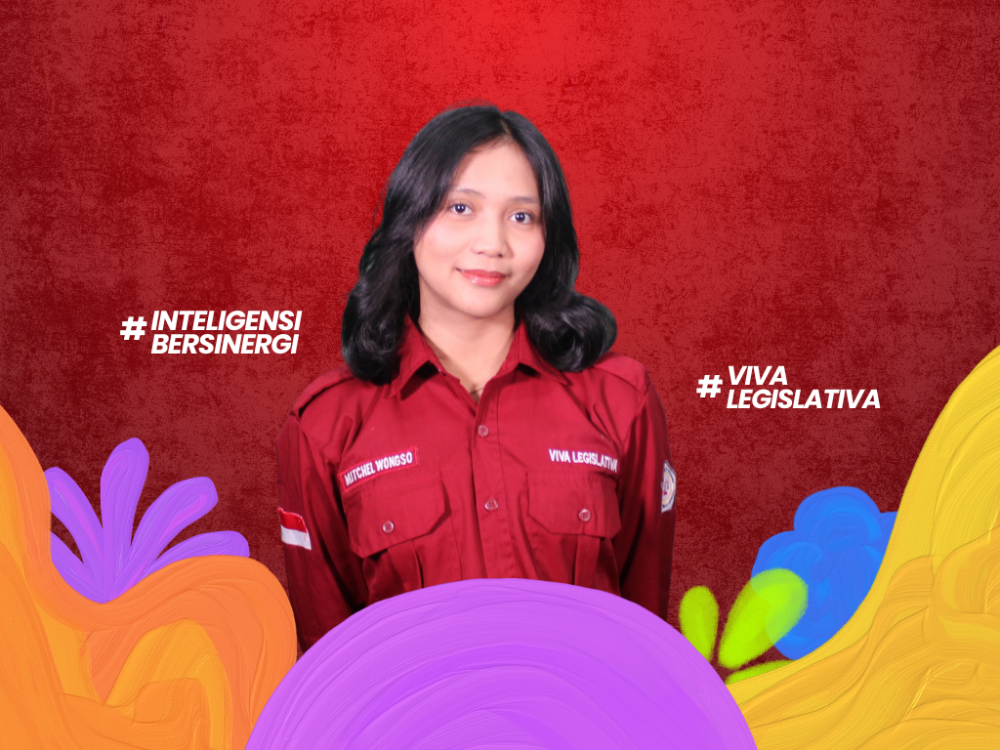

KOORDINATOR KOMISI I

Mengenal lebih dekat Komisi I Dewan Legislatif Mahasiswa Poltekkes Kemenkes Jakarta III Periode 2026.
Halo Mahasiswa Poltekkes Kemenkes Jakarta III!
Perkenalkan kami dari Komisi I Dewan Legislatif Mahasiswa Poltekkes Kemenkes Jakarta III Periode 2026.
Komisi I memiliki peran dalam menjalankan fungsi pengawasan terhadap pengelolaan keuangan lembaga kemahasiswaan, mengkaji laporan keuangan, serta memastikan pengelolaan keuangan organisasi berjalan secara transparan, tertib, dan bertanggung jawab.
Kami percaya bahwa pengelolaan keuangan yang baik merupakan salah satu fondasi penting dalam mewujudkan organisasi yang transparan dan akuntabel. Oleh karena itu, Komisi I hadir untuk mengawal serta memastikan pengelolaan keuangan lembaga kemahasiswaan dapat dipertanggungjawabkan.
Yuk, kenal lebih dekat dengan anggota Komisi I!





Menyelenggarakan Rapat Rancangan Anggaran Pendapatan dan Belanja Lembaga Keorganisasian (RAPBLK).
Menyelenggarakan Rapat Kerja guna membahas anggaran dari program kerja organisasi-organisasi di LKM Poltekkes Kemenkes Jakarta III.
Menetapkan besaran dana mahasiswa dan persentase keuangan LKM sesuai kebutuhan masing-masing lembaga yang telah disepakati bersama.
Mengesahkan besaran dana mahasiswa dan persentase keuangan LKM pada Rapat RAPBLK.
Pembagian persentase dana mahasiswa untuk LKM serta menetapkan program kerja dari setiap LKM Poltekkes Kemenkes Jakarta III.

Mengevaluasi dan mengoordinasi pembagian dana mahasiswa kepada tiap LKM pada tiga bulan pertama.

Mengevaluasi dan mengoordinasi pembagian dana mahasiswa kepada tiap LKM tiga bulan setelah Rapat Koordinasi Keuangan I.

Mengevaluasi dan mengoordinasi pembagian dana mahasiswa kepada tiap LKM tiga bulan setelah Rapat Koordinasi Keuangan II.

Mengevaluasi dan mengoordinasi pembagian dana mahasiswa kepada tiap LKM tiga bulan setelah Rapat Koordinasi Keuangan III.